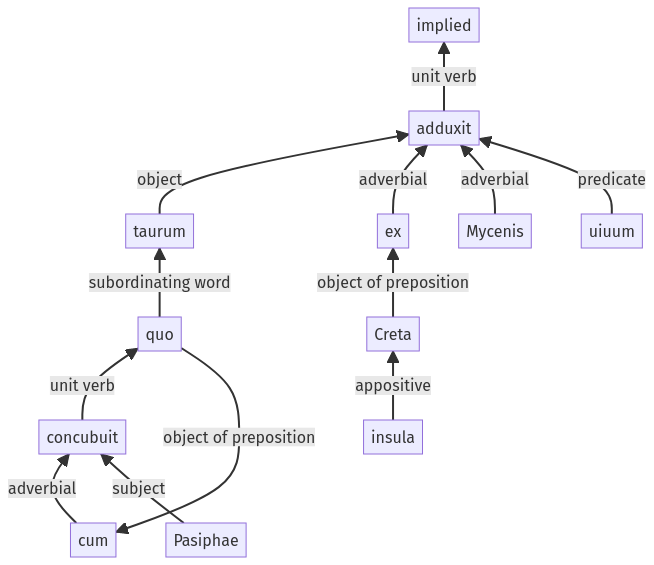

Hyginus, Fabulae, 30pr.8.1-30pr.8.11a
30pr.7.12-30pr.7.16a | 30pr.9.1-30pr.9.15a
Sentence 424
30pr.8.1-30pr.8.11a
taurum cum quo Pasiphae concubuit ex Creta insula Mycenis uiuum adduxit.
1 taurum
2 cum quo Pasiphae concubuit
1 ex Creta insula Mycenis uiuum adduxit
taurum cum quo Pasiphae concubuit ex Creta insula Mycenis uiuum adduxit.
Highlighting:
- connecting words
- unit verb
- subject
- object
Color code:
- independent clause (level 1, transitive verb)
- subordinate clause (level 2, intransitive verb)
